Chapter 0 Unityをインストールしよう
この章のゴール
- Unity Hubをインストールする
- Unity EditorのLTS版をインストールする
- Visual StudioのUnity開発環境を準備する
Unityをインストールしよう（Windowsの場合）
Unityをインストールしましょう。
Macの場合は下記のサイトなどを参考に。
https://techchance.jp/blog/2023/01/03/how_to_introduce_nity/
こちらは、アカウント作成、ライセンス認証周りも丁寧に解説されています。Windowsの場合も困ったら見てみてください。
毎回困る予測変換周りの設定方法がまとめられています。
https://zenn.dev/nok_c7/articles/c9b59cf32134f2
UnityHubをインストール
ダウンロード
下記サイトからUnityHubをダウンロード
アカウントを作成するか、サインインしましょう。
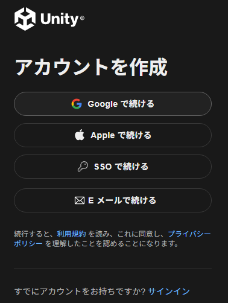
データ活用についての設定については、ONでもOFFでも問題ありません。
[Continue] で次に進みます。
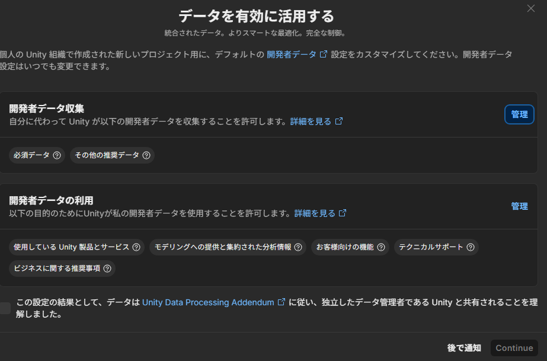
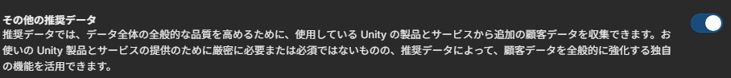
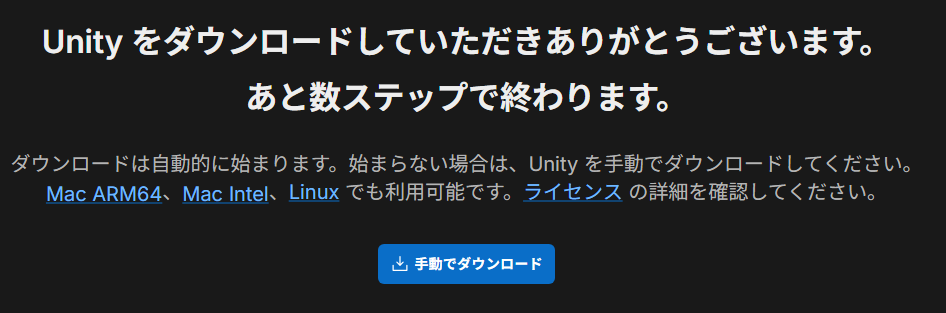
ダウンロードしたファイルを実行して、UnityHubをインストールしてください。
インストール完了したら、UnityHubを起動します。
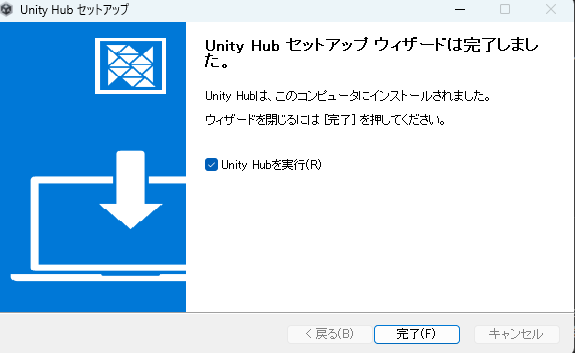
UnityHubを起動、アップデート
先ほどと同じアカウントでサインインしましょう。
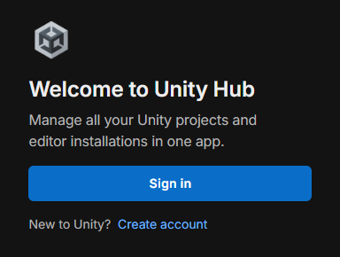
ログインが進まない場合は、link to login page. をクリック
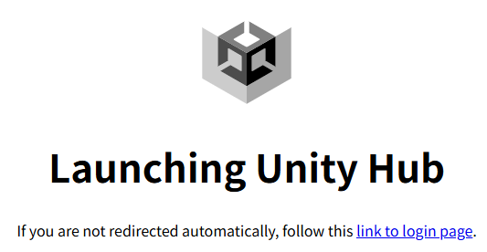
ログインすると、Personalライセンスの取得確認がでます。
[Agree] で承認。
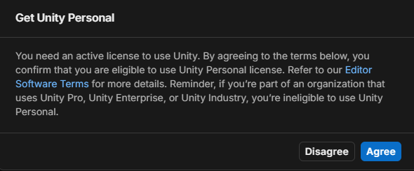
このとき、アップデートがあったら、最新版に更新しておきましょう。
[Settings]ボタンを押して環境設定を開く
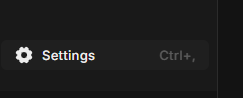
言語設定を日本語に変更（してもしなくてもいい）
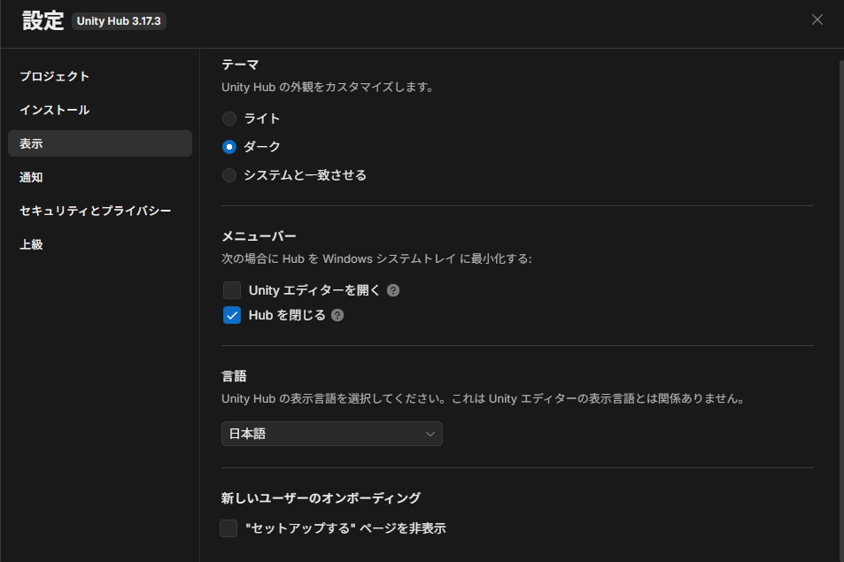
なお、UnityHubは日本語でも英語でも良いですが、Unity本体については英語メニューで解説します。日本語に変更してはいけない訳ではないですが、Web上の解説の多くが英語メニューになっているため、英語にしておいた方が楽になります。
Unityエディターをインストール
この資料では、Unity6.3LTSの仕様を前提に解説を進めます。
セットアップメニューからUnity6.4をインストールした人はそのまま進めてもいいですが、多少の画面レイアウトの差などがあることには注意してください。
[インストール]をクリック
Unity6.3LTS(6000.3.xx) を選んで[インストール]
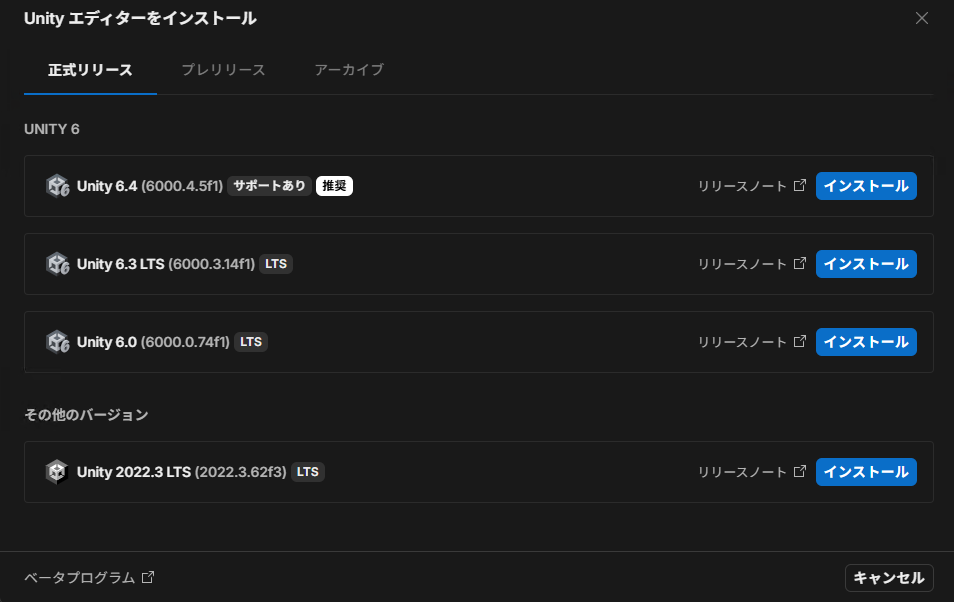
Microsoft Visual Studio Community が無ければチェックを入れる。
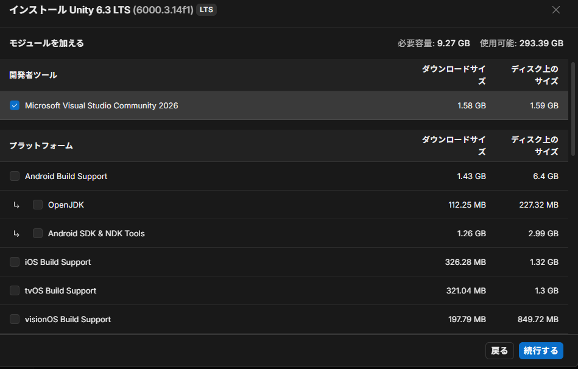
Web Build Supportにチェックを入れる。
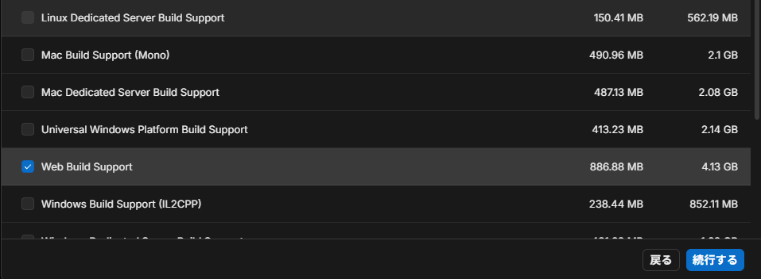
モジュールは後からでも追加出来ます。
[続行する]でインストール開始します。
インストール終了まで待つ（1時間以上かかることもあります）。
UnityHubが最新でない場合、インストールに失敗することがあるので、UnityHubは必ずアップデートしてから行ってください。
インストール最中に、[Visual Studio Installer]が起動するので、[続行]。
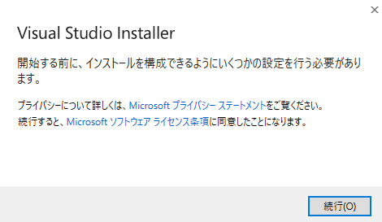
更新
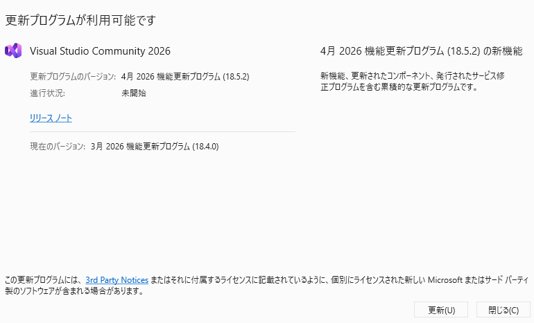
変更
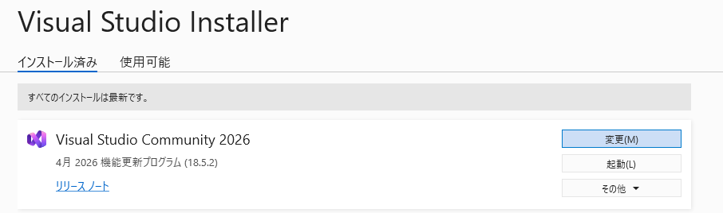
Unityによるゲーム開発、C++によるゲーム開発にチェックを入れて、[変更]
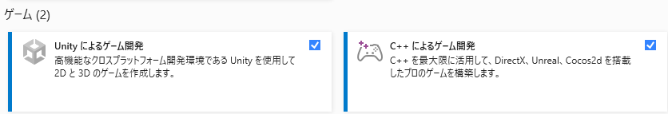
以上でUnity起動前の設定は完了です。
.NET SDK バージョンを 9.0.200以上に更新。
https://dotnet.microsoft.com/ja-jp/download/dotnet/9.0
Visual Studio Codeをインストール
https://azure.microsoft.com/ja-jp/products/visual-studio-code
拡張機能、Unityをインストール
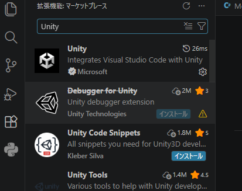
PreferencesのExternalToolsで、Visual Studio Codeを選ぶ
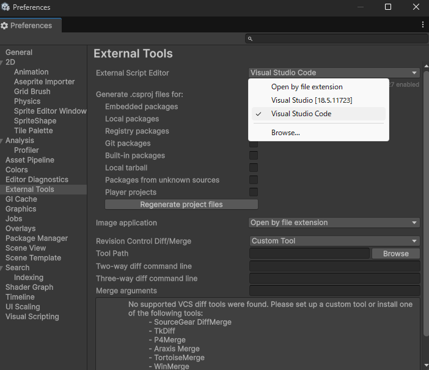
ここまでできたらOK
- Unity Hubにサインインできている
- Unity EditorのLTS版がインストール済みになっている
- Visual Studio InstallerでUnity開発に必要な項目が入っている